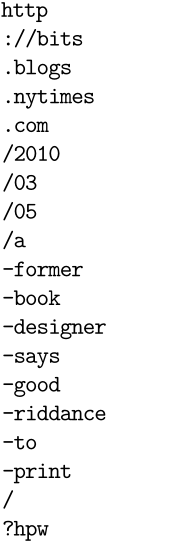
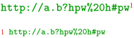
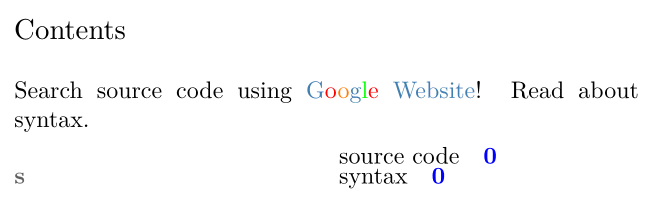

Contents
Overview
URLs can be typeset in various ways. You may specify a URL for later reuse via \useURL:
\useURL[aurl] [http://xkcd.com/149/] [] [I prefer hot dogs.]
where #1 is the identifier, #2 is the URL you want to point to, and #4 the text to be displayed where the URL is used. #3 can be used for the 'file path' portion of the URL, if you want. This dates back to when hyperlink support in DVI viewers required that split.
Alternatively, you can use only two arguments and the URL will be used as its own text.
\useURL[anotherurl] [http://xkcd.com/224/]
(That way any character may appear inside the URL string without breaking things under certain circumstances, which can happen when you specify the URL itself as the fourth argument.)
Now that you have defined some URLs you are ready to dereference them by their identifier wherever you please. Don't forget to enable interaction for clickable WWW-look-and-feel.
\setupinteraction[state=start] \starttext \from[aurl] % typesets the URL description in color \from[anotherurl] % typesets the URL in color \stoptext
URL shortcuts defined by \useURL can be used while \url as well:
\url[aurl]
How to Typeset URLs
Example for Mailto #1
-
\setupinteraction[state=start] \useurl [mymail] [mailto:nobody@example.zzz] [][visible@mailaddress.zzz] Send your spam to \from[mymail]!
Example for Mailto #2
-
\setupinteraction[state=start] Send your spam to \goto{visible@mailaddress.zzz}[url(mailto:nobody@example.zzz)]
Example for WWW ( \goto )
Another way of typesetting URLs is the \goto: \goto{#1}[#2] command. This expects the description text as first argument and the actual URL as the second one; note that it has to be wrapped in url(#2) to create a clickable link:
\goto{In Lua, array indices start from one.}[url(http://www.xkcd.com/163/)]
Escaping of Special Characters
You might be interested in not escaping characters.
Note that special characters, eg hash sign, percent sign, must be escaped by backslash. Escaping means that the special character will be processed one step later and it prevents annoying error messages during compilation.
The # sign will be replaced by \#,
the % sign by \%, etc.
-
\setupinteraction[state=start] \useurl [myurl] [www.example.zzz/\#999] [] [www.example.zzz/\#999]
-

Another way of writing special characters is described below, with hyphenated URLs.
Hyphenated URLs
URLs tend to become large monsters under many circumstances but you may have a good reason not to conceal them from the reader. This is where hyphenation comes in handy. ConTeXt provides a dedicated mechanism for chopping them into pieces:
-
\enabledirectives[hyphenators.urls.packslashes] % this avoids consecutive slashes each in a different line \sethyphenatedurlbefore{/} % but then they seem to be fixed to what comes before and after them \startTEXpage[width=7em, foregroundstyle=\ttb] % just to display the output better \hsize\zeropoint % to see where lines may be broken \hyphenatedurl{http://bits.blogs.nytimes.com/2010/03/05/a-former-book-designer-says-good-riddance-to-print/?hpw} \stopTEXpage
- 
The previous sample shows all possible line breaks, since horizontal size (text width) has been set to zero (\hsize\zeropoint).
Hyphenation Rules
This has some characters predefined where Hans “likes” URLs to break (see the list at the beginning of lang-url.lua, cf. a message on ntg-context). If you prefer other characters you can add them via:
\sethyphenatedurlnormal{:=?&} \sethyphenatedurlbefore{?&} \sethyphenatedurlafter {:=}
URL hyphenation can, of course, be used wherever you need them.
\useURL[yaurl] [http://xkcd.com/638/] [] [\hyphenatedurl{http://xkcd.com/638/}] \starttext \from[yaurl] \stoptext
Escaping Special Characters
The method for escaping of special characters described above does not work with command \hyphenatedurl completely, unfortunately. Escaping backslash will undesirably appear on the output when percent sign is printed out. Similar problems bring hash sign and backslash.
Therefore, these three characters must be rewritten to commands, see the following list:
% |
--> \letterpercent |
# |
--> \letterhash |
\ |
--> \letterescape or \letterbackslash |
For other characters, similar commands have been predefined but it is not necessary to use them.
& |
--> \letterampersand |
< |
--> \letterless |
> |
--> \lettermore |
" |
--> \letterdoublequote |
' |
--> \lettersinglequote |
$ |
--> \letterdollar |
^ |
--> \letterhat |
_ |
--> \letterunderscore |
| |
--> \letterbar |
~ |
--> \lettertilde |
/ |
--> \letterslash |
? |
--> \letterquestionmark |
! |
--> \letterexclamationmark |
@ |
--> \letterat |
: |
--> \lettercolon |
{ |
--> \letterbgroup or \letteropenbrace or \letterleftbrace |
} |
--> \letteregroup or \letterclosebrace or \letterrightbrace |
A custom symbol can be inserted as well, eg in case of a linebreak:
\def\hyphenatedurlseparator{↩}
These special commands can be used in other cases, like \useURL, too.
Setting Color and Style
For \url:
\setupurl [color=blue, style=\tf]
\setupinteraction [state=start, color=blue, style=\tf]
Tips and Tricks
Using variable URLs
When using variables, or macros in general, it's necessary to consider that \useURL doesn't expand, which means that any commands within will be treated like text and printed plainly, i.e. instead of the hyperlink the command name will be pasted to the browser or mail client. To circumvent this use \expanded{} around \useURL:
\expanded{\useURL[][][][]}
The following MWE demonstrates the issue.
\setupinteraction[state=start] % \setvariables[Sender][Mail={ntg-context@ntg.nl}] % \useURL[Direct][mailto:ntg-context@ntg.nl][][ntg-context@ntg.nl] \useURL[Unexpanded][mailto:\getvariable{Sender}{Mail}][][\getvariable{Sender}{Mail}] % same as above but within \expanded{}: \expanded{\useURL[Expanded][mailto:\getvariable{Sender}{Mail}][][\getvariable{Sender}{Mail}]} % \starttext \from[Direct] Direct input works\blank \from[Unexpanded] Unexpanded fails\blank \from[Expanded] Expanded works\blank % In the PDF mind the tooltips and how the wrong line transfers to the mail client. \stoptext
Many Different Hyperrefs
If you need many hyperrefs in your document these definitions may be handy for you
-
\def\href#1#2{\useURL[#2][{#2}][][{#1}]\goto{\url[#2]}[url(#1)]} \def\ahref#1{\color[linkcolor]{\ttx \href{#1}{<#1>}}} \def\fullahref#1{\color[linkcolor]{\ttx \href{#1}{http://#1}}} \def\mailto#1{\useURL[#1][mailto:#1][][#1]\from[{#1}]} \def\MailTo#1#2{\useURL[#1][mailto:#1][][#2]\from[{#1}]} Send mail to \MailTo{foo@bar.zzz}{Mr. Foo}
Avoid Escaping Characters
In case you don’t want to escape characters from your URLs, you might want to use the following command:
-
\setupinteraction[state=start] \setupnote[footnote][location=text] \setupnotation[footnote][alternative=serried, numbercommand=\tfx] \unexpanded\def\mypersonalurl#1{% \bgroup\tt\goto{\hyphenatedurl{#1}}[url(#1)]\egroup} \startasciimode \mypersonalurl{http://a.b?hpw%20h#pw} \stopasciimode \startasciimode \footnote{\mypersonalurl{http://a.b?hpw%20h#pw}} \stopasciimode \placenotes[footnote]
- 
But you have to consider one option to make it work:
-
Setting
\asciimode
for the whole document.
Comments won’t work, because
%will be considered a standard character.
-
Wrapping all URLs inside
\startasciimode
...
\stopasciimode
.
If you use URLs inside footnotes, it is the whole footnote which has to be inside the pair of commands.
Comments inside the mode won’t work.
External Links
Create a macro for external links in a colour that is distinct from other document links.
-
% Enable document colours \setupcolors[state=start,] % Internal link colours \setupinteraction[state=start,color=blue,] % External link colours \definecolor[steelblue][h=4682B4] \define[2]\href{% \begingroup \setupinteraction[ style=normal, color=steelblue, ]% \goto{#1}[url(#2)]% \endgroup% } % Set index colours \setupcombinedlist[content][ interaction=all, color=red, ] % Set the table of contents colours \setuplist[chapter][ % Text colour color=darkcyan, % Page number colour pagecolor=darkgreen, ] % Set up the index heading colour \setupregister[index][ color=darkgray, balance=no, ] \def\Google{G\color[red]{o}\color[orange]{o}g\color[green]{l}\color[red]{e}} %\starttext % makes no sense in the wiki \startTEXpage[offset=1dk, foregroundstyle=\tfb] \completecontent % \startchapter[title=chapter] Search \index{source code}{source code} using \href{\Google{} Website}{http://google.com}! Read about \index{syntax}{syntax}. % \stopchapter \blank \placeindex \stopTEXpage %\stoptext % makes no sense in the wiki
- 